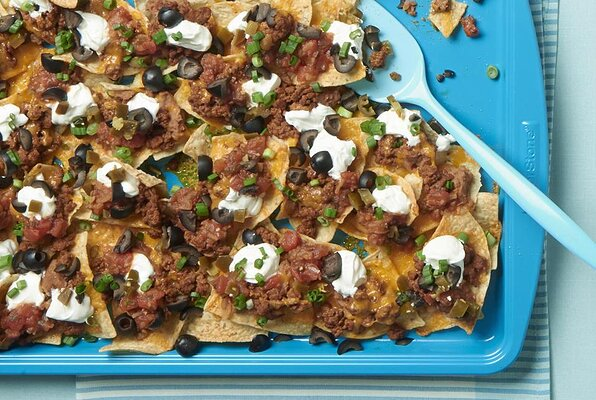

Super Nachos

Nachos, but super!
This makes a huge meal-sized tray of nachos with lots of good stuff! You can adjust ingredient quantities to suit your preference. Serve with extra chips if required. Great for game day.
Ingredients:
- 1 pound ground beef
- 1 (1.25 ounce) package taco seasoning mix
- ¾ cup water
- 1 (18 ounce) package restaurant-style tortilla chips
- 1 cup shredded sharp Cheddar cheese, or more to taste
- 1 (15.5 ounce) can refried beans
- 1 cup salsa
- 1 cup sour cream, or more to taste
- 1 (10 ounce) can pitted black olives, drained and chopped
- 4 green onions, diced
- 1 (4 ounce) can sliced jalapeno peppers, drained
Steps:
- Cook and stir ground beef in a skillet over medium heat until meat is crumbly and no longer pink, 5 to 10 minutes. Drain excess grease. Stir in taco seasoning mix and water and simmer until beef mixture has thickened, 8 to 10 minutes.
- Set the oven rack about 6 inches from the heat source and preheat the broiler. Line a baking sheet with aluminum foil.
- Spread tortilla chips on the prepared baking sheet; top with Cheddar cheese and dot with refried beans and ground beef mixture.
- Broil in the preheated oven until cheese is melted, watching carefully to prevent burning, 3 to 5 minutes.
- Top nachos with salsa, sour cream, black olives, green onions, and jalapeno peppers.